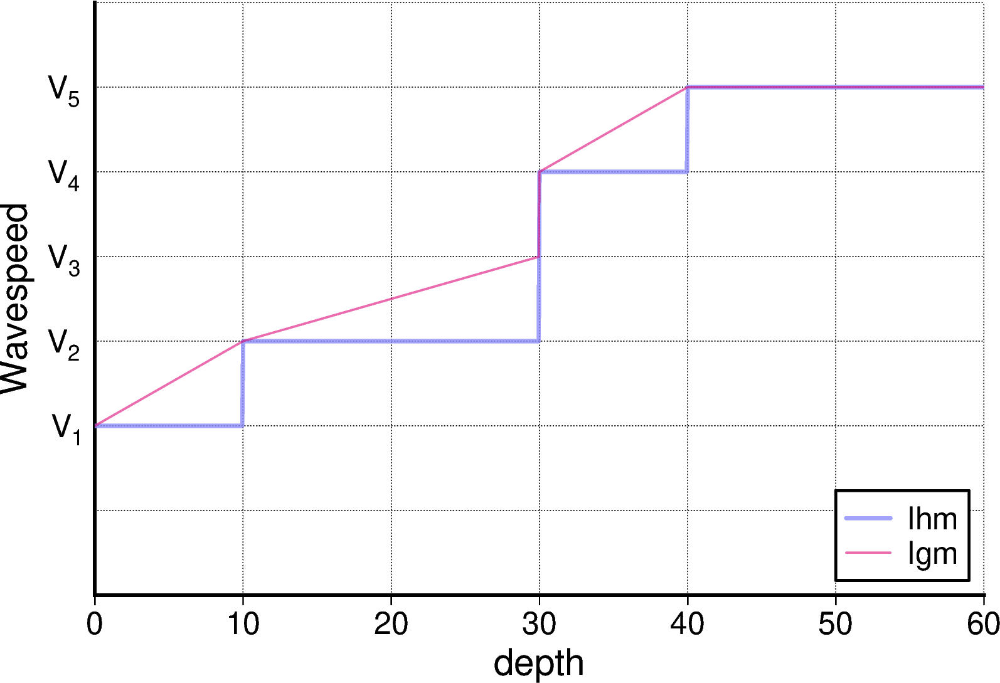

Velocity Model¶
Choice of Velocity Model Type¶
Users can choose a uniform (uni), a layered homogeneous medium
(lhm), or a NetCDF (grd) file input (grd) velocity type. In
addition, a randomly inhomogeneous medium calculated by an external
program can be overlaid onto the model.
Parameters
vmodel_type-
Specify the input velocity model. Choose from one of the following.
’uni’- Homogeneous medium with a free surface. The following additional parameters are required:
’lhm’- Layered Homogeneous Medium. A model with a constant physical property value for each depth layer.
'lgm'(New in Version 25.01)- Linear Gradient Model: A model in which seismic wave velocity changes linearly within a layer.
’grd’- Velocity model input from
NetCDF(GMT grd) files. ’user’- Velocity model determined by user subroutine
Depending on the structural model chosen, the additional parameters required will differ as described below.
vmodel='uni'¶
The following parameters are required:
Parameters
vp0- P-wave velocity [km/s] in the uniform model.
vs0- S-wave velocity [km/s] in the uniform model.
rho0- Mass density [g/cm] in the uniform model.
qp0- of the uniform model.
qs0- of the uniform model.
topo0- Topography depth in the uniform model. If this value is greater than zero, seawater is filled from to this depth.
vmodel='lhm' & 'lgm'¶
In lhm (Layered Homogeneous Medium) and lgm, the interface depth and physical properties of each layer are specified in a table.
Parameters
fn_lhm- Medium specification file. Each line specifies the depth of
the top of the layer, density, P-wave velocity, S-wave
velocity, , and below that depth. They must be
separated by space(s) (see the following example). Lines
starting with
#will be neglected.1 2 3 4 5 6 7 8 9 10
# depth rho(g/cm^3) vp(km/s) vs(km/s) Qp Qs # ------------------------------------------------------- 0 2.300 5.50 3.14 600 300 3 2.400 6.00 3.55 600 300 18 2.800 6.70 3.83 600 300 33 3.200 7.80 4.46 600 300 100 3.300 8.00 4.57 600 300 225 3.400 8.40 4.80 600 300 325 3.500 8.60 4.91 600 300 425 3.700 9.30 5.31 600 300
Both lhm and lgm are the same file (in both cases, the parameter name is fn_lhm), but the physical properties created from the same file are different. In the case of lhm, the layers below the first column are filled with uniform physical properties specified in the second to sixth columns. In contrast, in the case of lgm, the physical properties change linearly up to the layer one row below. However, the bottom layer (last row) behaves in the same way as lhm.
In order to understand these behaviors, consider the following simplified model. Although there are actually multiple values such as density, Vp, and Vs, we will explain them using a single velocity value.
In order to understand these behaviors, let us consider the following simplified model. There are actually multiple values such as density, Vp, and Vs, but we will explain them using a single wavespeed.
1 2 3 4 5 6 7 | |
The depth-dependent velocity structure created using this structural model file is as shown in the figure below.

An example of the difference in depth-dependent velocity structure between lhm and lgm, which are created from the same structure specification file. lhm has uniform physical properties within a layer, whereas lgm has linear variation in physical properties within a layer.
In the case of lhm, the layers below the depth of each layer are filled with the physical properties of the line. In the above example, there are two layers at a depth of 30 km, and the physical properties V3 and V4 are specified for each, but in the case of lhm, the V3 layer is ignored because it is 0 in thickness.
In the case of lgm, on the other hand, the physical properties of each layer change linearly with depth up to the value of the next layer. In this case, the different physical properties of the two 30 km-deep layers can also be used to express a discontinuous surface. If the same property value (V1) is applied over a certain range as an following example, it behaves in the same way as lhm:
1 2 | |
In other words, lgm can express all the structures that can be expressed by lhm. However, the structure specification files for lhm and lgm are different from each other so that the same structure is expressed by lhm and lgm.
vmodel='grd'¶
The following additional parameters are required for structural input using NetCDF files.
Parameters
dir_grd- Directory of the velocity structure (
NetCDF) files. fn_grdslt- List file that specifies the grd files and the associated medium.
Each grd file specifies the depth of the top surface of the structural boundary.
The unit of depth is "m".
Each line contains the grd filename (with a single
or double quotation mark; recommended), density, P-wave
velocity, S-wave velocity, , , and the layer
number integers (0-9) separated by spaces (see following
example). Lines starting with
#will be neglected. The layer number is used to specify the source or station depth fit to the layer depth. The firstNetCDFfile will be treated as the ground surface. If the depth of the ground surface is deeper than zero, the depth range from to the surface is assumed to be an ocean layer. The grid above the free surface is treated as an air column.1 2 3 4 5 6 7 8 9 10 11 12 13 14 15 16 17 18 19 20 21 22 23 24 25
# grd filename rho vp vs QP QS sw # ------------------------------------------------------- 'eJIVSM_01_TAB_.grd' 1.80 1.70 0.35 119 70 0 'eJIVSM_02_BSM_.grd' 1.95 1.80 0.50 170 100 0 'eJIVSM_03_BSM_.grd' 2.00 2.00 0.60 204 120 0 'eJIVSM_04_BSM_.grd' 2.05 2.10 0.70 238 140 0 'eJIVSM_05_BSM_.grd' 2.07 2.20 0.80 272 160 0 'eJIVSM_06_BSM_.grd' 2.10 2.30 0.90 306 180 0 'eJIVSM_07_BSM_.grd' 2.15 2.40 1.00 340 200 0 'eJIVSM_08_BSM_.grd' 2.20 2.70 1.30 442 260 0 'eJIVSM_09_BSM_.grd' 2.25 3.00 1.50 510 300 0 'eJIVSM_10_BSM_.grd' 2.30 3.20 1.70 578 340 0 'eJIVSM_11_BSM_.grd' 2.35 3.50 2.00 680 400 0 'eJIVSM_12_BSM_.grd' 2.45 4.20 2.40 680 400 0 'eJIVSM_13_BSM_.grd' 2.60 5.00 2.90 680 400 0 'eJIVSM_14_BSM_.grd' 2.65 5.50 3.20 680 400 0 'eJIVSM_15_UPC_.grd' 2.70 5.80 3.40 680 400 0 'eJIVSM_16_LWC_.grd' 2.80 6.40 3.80 680 400 0 'eJIVSM_17_CTM_.grd' 3.20 7.50 4.50 850 500 0 'eJIVSM_18_PH2_.grd' 2.40 5.00 2.90 340 200 1 'eJIVSM_19_PH3_.grd' 2.90 6.80 4.00 510 300 0 'eJIVSM_20_PHM_.grd' 3.20 8.00 4.70 850 500 0 'eJIVSM_21_PA2_.grd' 2.60 5.40 2.80 340 200 2 'eJIVSM_22_PA3_.grd' 2.80 6.50 3.50 510 300 0 'eJIVSM_23_PAM_.grd' 3.40 8.10 4.60 850 500 0 node_grd- MPI node to input the
NetCDFdata. AllNetCDFfiles are first read by this node, and then, transferred to all nodes via MPI data communication. topo_flatten- Make topography variatinon flat by offsetting the medium below.
Renaming is_flatten to topo_flatten
This option used to be is_flatten until Version 5.1, but has been renamed to avoid confusion with the earth_flattening option implemented in Version 5.2.
vmodel='user'¶
Any kind of velocity structure can be used by modifying a user subroutine defined in src/swpc_*/m_vmodel_user.F90. Note that recompilation of the code
is necessary if this Fortran file is modified. It is also easy to read in arbitrary parameters from a parameter file or to add parameters. Please refer the
comments in the file for the details.
On Treatments of Air and Seawater Layer¶
In OpenSWPC, the air column has a mass density of [g/cm],
velocities of [km/s], and intrinsic
attenuation parameters of .
The air column is treated as a
vacuum with no seismic wave propagation (with zero velocities). However,
the mass density in the air column must not be zero to avoid division by zero.
In the ocean column, [g/cm], [km/s],
and are assumed.
The attenuation of underwater sound waves is known to be very small, so we have introduced a very large values that are virtually unattenuated.
The P-wave velocity is km/s, but in the version 5.2 and later, the depth-dependent Munk's profile which is defined the equation below can be used by setting munk_profile = .true..
where the unit of is km. This profile contains a minima which corresponds to the SOFAR channel at a depth of 1300 m.
In the free surface and seafloor, the reduced order of the finite difference is performed according to Okamoto and Takenaka (20051) and Maeda and Furumura (20032). These discontinuities are automatically detected as boundaries that change and from zero to a finite value.
Parameters
is_ocean- Seawater mode. When
.true.(default), the surface of the sea (the shallowest surface) is filled with sea water from . When.false., the surface of the sea is all air, and the sea bed is treated as a free surface. munk_profile(new in version 5.2)- If this value is
.true., the Munk's profile with minima is applied in the seawater layer. Otherwise a constant value of 1.5 km/s is used.
Small-Scale Random Inhomogeneity¶
Users may overlay small-scale velocity inhomogeneities with specified
power-law spectra on the background velocity models of ’uni’, ’lhm’,
and ’grd’. The small-scale velocity inhomogeneity is defined by
external files. From the average velocities , , and
, the fluctuated velocities and density are given as
where is a scaling parameter based on a laboratory experiment (Sato et al., 20123).
The random media files are generated by a separated program. See this section for details.
The random media are given as two- or three-dimensional NetCDF files.
At each grid location, the velocity fluctuation is defined.
The code automatically reads the corresponding volume from the file; It
is not necessary to decompose the NetCDF files into parts for parallel
computation. If the computational size (Nx, Ny, Nz) is larger than the
random media file size, the media is used repeatedly by applying a
circular boundary condition. The simulation codes do not care if the
grid sizes of the simulation and the input random media file are
identical.
Parameters
vmodel_type-
Velocity structure model type specification.
'uni_rmed'- Uniform homogeneous structure + random medium
'lhm_rmed'- Layered homogeneous medium + random medium
'lgm_rmed'- Linear Gradient Model + random medium
'grd_rmed'- Structure input using
NetCDFfiles + random medium
dir_rmed- A directory name for storing the random media data files.
Note that users may use the 3D random media files for 2D calculation.
vmodel='uni_rmed'¶
The following parameter is required in addition to the parameters used
in vmodel=’uni’.
Parameters
fn_rmed0- Name of the random medium file.
In this model, the average velocity will be fluctuated based on the
input fn_rmed0.
vmodel='lhm_rmed' & 'lgm_rmed'¶
In this model, the small-scale velocity fluctuation is applied to every
layer defined by vmodel=’lhm’. It is possible to assign different
random velocity models at different layers.
The following parameter is substituted in fn_lhm:
Parameters
fn_lhm_rmed- List file of the velocity structure.
The list file has a similar format to
fn_lhm; it contains the filenames of the random media files in the rightmost column as in the following example.In this example, the layers starting from depths of 0 km and 3 km have fluctuations defined in1 2 3 4 5 6 7 8 9 10
# depth rho(g/cm^3) vp(km/s) vs(km/s) Qp Qs fn_rmed # ---------------------------------------------------------------------- 0 2.300 5.50 3.14 600 300 rmedia1.nc 3 2.400 6.00 3.55 600 300 rmedia1.nc 18 2.800 6.70 3.83 600 300 rmedia2.nc 33 3.200 7.80 4.46 600 300 rmedia2.nc 100 3.300 8.00 4.57 600 300 - 225 3.400 8.40 4.80 600 300 - 325 3.500 8.60 4.91 600 300 - 425 3.700 9.30 5.31 600 300 -rmedia1.nc, and the layers from 18 km and 33 km are defined inrmedia2.nc. For the layer deeper than 100 km, a dummy filename (-) is given. In this case (i.e., there is no file found), a fluctuation will not be given. The dummy filename is mandatory in this case.
vmodel='grd_rmed'¶
When overlaying the random fluctuations to the layers defined by the
model of vmodel=’grd’, it is possible to assign different random media
to different layers. The starting depth of the velocity fluctuation can
be either the free surface or depths defined by a layer.
The filename of the velocity fluctuation is given by the following parameter:
Parameters
fn_grdlst_rmed- A list file that specifies the velocity layer and the random
fluctuation files for each layer.
The list file has two additional columns at the right: the filename of
the random medium and the reference layer number.
1 2 3 4 5 6 7 8 9 10 11 12 13 14 15 16 17 18 19 20 21 22 23 24 25
# grd filename rho vp vs QP QS sw fn_rmed ref # ----------------------------------------------------------------------- 'eJIVSM_01_TAB_.grd' 1.80 1.70 0.35 119 70 0 'rmed3d_1.nc' 0 'eJIVSM_02_BSM_.grd' 1.95 1.80 0.50 170 100 0 'rmed3d_1.nc' 0 'eJIVSM_03_BSM_.grd' 2.00 2.00 0.60 204 120 0 'rmed3d_1.nc' 0 'eJIVSM_04_BSM_.grd' 2.05 2.10 0.70 238 140 0 'rmed3d_1.nc' 0 'eJIVSM_05_BSM_.grd' 2.07 2.20 0.80 272 160 0 'rmed3d_1.nc' 0 'eJIVSM_06_BSM_.grd' 2.10 2.30 0.90 306 180 0 'rmed3d_1.nc' 0 'eJIVSM_07_BSM_.grd' 2.15 2.40 1.00 340 200 0 'rmed3d_1.nc' 0 'eJIVSM_08_BSM_.grd' 2.20 2.70 1.30 442 260 0 'rmed3d_1.nc' 0 'eJIVSM_09_BSM_.grd' 2.25 3.00 1.50 510 300 0 'rmed3d_1.nc' 0 'eJIVSM_10_BSM_.grd' 2.30 3.20 1.70 578 340 0 'rmed3d_1.nc' 0 'eJIVSM_11_BSM_.grd' 2.35 3.50 2.00 680 400 0 'rmed3d_1.nc' 0 'eJIVSM_12_BSM_.grd' 2.45 4.20 2.40 680 400 0 'rmed3d_1.nc' 0 'eJIVSM_13_BSM_.grd' 2.60 5.00 2.90 680 400 0 'rmed3d_1.nc' 0 'eJIVSM_14_BSM_.grd' 2.65 5.50 3.20 680 400 0 'rmed3d_1.nc' 0 'eJIVSM_15_UPC_.grd' 2.70 5.80 3.40 680 400 0 'rmed3d_1.nc' 0 'eJIVSM_16_LWC_.grd' 2.80 6.40 3.80 680 400 0 'rmed3d_3.nc' 0 'eJIVSM_17_CTM_.grd' 3.20 7.50 4.50 850 500 0 'rmed3d_3.nc' 0 'eJIVSM_18_PH2_.grd' 2.40 5.00 2.90 340 200 1 'rmed3d_2.nc' 18 'eJIVSM_19_PH3_.grd' 2.90 6.80 4.00 510 300 0 'rmed3d_2.nc' 18 'eJIVSM_20_PHM_.grd' 3.20 8.00 4.70 850 500 0 'rmed3d_3.nc' 18 'eJIVSM_21_PA2_.grd' 2.60 5.40 2.80 340 200 2 'rmed3d_2.nc' 21 'eJIVSM_22_PA3_.grd' 2.80 6.50 3.50 510 300 0 'rmed3d_2.nc' 21 'eJIVSM_23_PAM_.grd' 3.40 8.10 4.60 850 500 0 'rmed3d_3.nc' 21
The reference layer number defines the reference depth plane of the
random media. If this number is zero, the depth grid number of the
computational model is directly used to assign the random media. This is
exactly the same as the behavior of the uni_rmed or lhm_rmed models.
If the nonzero value of the reference layer number NR is specified,
the depth of the NR layer is treated as the base plane. The depth grid
of the random medium is measured from this depth. Introducing this
reference plane, the inclined random media according to the velocity
discontinuity (such as the plate boundary) can be specified. In the
above example, the 18th and 21st layers are treated as the references of
18--20th and 21--23th layers, respectively.
Truncation of Velocity Fluctuations¶
If the magnitude of the velocity fluctuation becomes too large, there can be a spot with non-physical velocity, such as negative velocity or a velocity too large for the Earth medium. The simulation may be unstable under the following conditions:
-
The fluctuated velocity exceeds the stability condition for cases with .
-
The velocity has unrealistic negative values for cases with .
-
The mass density has negative values for cases with .
To avoid such situations, OpenSWPC automatically limits the range of
the fluctuated velocity to vcut,
where vcut is an input parameter and is the maximum
possible velocity derived from the stability condition.
In addition, the following parameter controls the minimum density.
Parameters
rhomin- Minimum mass density in g/cm. (1.0 g/cm by default.)
Truncation of Low-Velocity Layer¶
If the existing ground structure model is used as it is, the wave velocity near the ground surface in particular may become extremely low, and in some cases the wavelength condition may not be satisfied. It is possible to modify the structure model each time, but in OpenSWPC, the low velocity can be truncated automatically using the following parameters.
Parameters
vcut- Cut-off velocity. For the
’lhm’or’grd’models, a velocity slower than this value will be overwritten by thevcutvalue. This parameter is used to avoid wavelengths that are too short and violate the wavelength condition (the wavelength is recommended to be longer than 5-10 grids). This substitution will not be performed in the oceanic area.
The behavior of vcut is somewhat complex in order to maintain the Vp/Vs speed ratio. The vcut decision is made for the input file (fn_lhm, fn_grd, etc.).
Earth-flattening transformation¶
OpenSWPC performs calculations in the Cartesian coordinate system, but when the propagation distance exceeds several hundred kilometers, the spherical effect of the Earth cannot be ignored.
To address this, the depth of the velocity structure input is treated as the depth from the Earth's surface, which is approximated by a sphere, and the Earth-flattening transformation (e.g., Aki and Richards, Box 9.2) is implemented to convert it to an approximately equivalent horizontal stratified structure.
Parameters
- **
earth_flattening** (New in Version 5.2) - If this option is
.true., OpenSWPC performs the transformation the Cartesian coordinate to pseudo-spherical coordinate by means of the Earth-flattening tranformation
When this option is specified, the depth on the sphere is converted to the depth in the Cartesian coordinate system as follows.
where is the radius of the Earth. The wavespeeds and mass density corresponding to the depth is converted as follows.
Here, is an integer, and is used for SH waves, and is used for - waves and 3D.
-
Okamoto, T., and H. Takenaka (2005). Fluid-solid boundary implementation in the velocity-stress finite- difference method, Zisin 2, 57, 355–364, doi:10.4294/zisin1948.57.3_355. (in Japanese with English Abstract) (article link) ↩
-
Maeda, T., and T. Furumura (2013), FDM simulation of seismic waves, ocean acoustic waves, and tsunamis based on tsunami-coupled equations of motion, Pure Appl. Geophys., 170(1-2), 109–127, doi:10.1007/s00024-011-0430-z. (article link) ↩
-
Sato, H., M. C. Fehler, and T. Maeda (2012), Seismic Wave Propagation and Scattering in the Heterogeneous Earth: Second Edition, Springer Berlin Heidelberg, Berlin, Heidelberg, doi:10.1007/978-3-642-23029-5. ↩